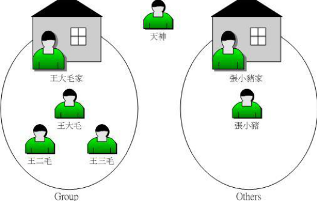
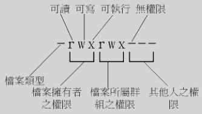
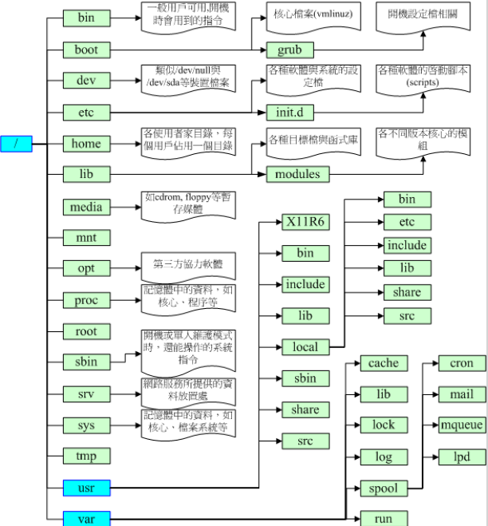

[TOC]

帐号 --> /etc/passwd 密码 --> /etc/shadow group --> /etc/group

系统默认语系 --> /etc/sysconfig/i18n
改变文件属怅不权限
r:4 w:2 x:1
chmod 777 .bashrc
chmod u/g/o/a +/-/= rwx filename/dir
chmod u=rwx,go=rx .bashrc
将权限去掉而保留已存在的权限？如：要拿掉全部人的可执行权限
chmod a-x .bashrc

http://www.isstudy.com/linux/4123.html
chown [-R] 账户名称：用户组名称、文件或目录
参数： -R ：进行递归的持续更改，即将同子目录下的所有文件、目录都更新问这个用户组。通常用在更改某一目录的情况。 范例：
[root@linux ~]#chown bin install.log
[root@linux ~]#ls –l
-rw-r--r-- 1 bin users 24343 Jun 23 08:33 install.log
[root@linux ~]#chown root:root install.log
[root@linux ~]#ls -l
-rw-r--r-- 1 root root 24343 Jun 23 08:33 install.log
统计文件夹下文件的个数
ls -l | grep "^-" | wc -l
统计文件夹下目录的个数
ls -l | grep "^d" | wc -l
统计文件夹下文件个数，包括子文件
ls -lR | grep "^-" | wc -l
统计文件夹下目录个数，包括子目录
ls -lR | grep "^d" | wc -l
wc 命令： (Word Count)功能为统计指定文件中的字节数、字数、行数，并将统计结果显示输出。
wc [-lcw]
-c 统计字节数 -l 统计行数 -m 统计字符数，此标志不能与-c 标志一起使用 -w 统计字数。一个字定义为由空白、跳格或换行字符分隔的字符串
#!/bin/bash
# Grabs and kill a process from the pidlist that has the word myapp
pid=`ps aux | grep myapp | awk '{print $2}'`
kill -9 $pid
netstat -anp | grep portno 即：netstat –apn | grep 8080
其中最后一栏是 _ PID/Program name _
查看磁盘使用情况 df -lh
查看目录的磁盘占用情况 du -sh * | sort -h
crontab
Ubuntu 查看 crontab 运行日志
修改 rsyslog 文件，将/etc/rsyslog.d/50-default.conf 文件中的#cron.*前的#删掉； 重启 rsyslog 服务 service rsyslog restart； 重启 cron 服务 service cron restart
~\.ssh 目录；~\.ssh下，执行ssh-keygen -t rsa，生成私钥 id_rsa, 公钥 id_rsa.pub;id_rsa.pub 拷贝到 linux 的 ~/.ssh 目录下，改名为 authorized_keys；vi /etc/ssh/sshd_configRSAAuthentication yes # 是否允许用户自行使用成对的密钥系统进行登入行为 version 2
PubkeyAuthentication yes # 是否允许用户自行使用成对的密钥系统进行登入行为
AuthorizedKeysFile # 公钥数据路径 用户目录下 .ssh/authorized_keys
修改完成后， sudo systemctl restart sshd 重启 ssh 服务； 5. 登录服务器: ssh -i ~\.ssh\id_rsa gjh@10.19.12.12
linux 下 ssh 客户端以及 sftp 文件传送的一般用法
以前在 windows 上，我要用 ssh 连接服务器，我一般都用 putty。 这段时间一直在 linux 上工作，由于 linux 上一般都自带 ssh 客户端，也就是 ssh 命令了，此外还有一个命令 sftp，用来安全的传送文件，今天为了管理 linux 服务器，用到了 linux 下的这两个命令行工具，现就其最常用的用法描述如下： 假定服务器 ip 为 61.145.34.33，ssh 服务的端口号为 9186，服务器上有个用户为 sshuser； 用 ssh 登录服务器的命令为： >ssh -l sshuser 61.145.34.33 -p 9186 回车后，如果是第一次登录，会提示你一条认证信息，你键入 yes 即可，接着输入服务器 sshuser 的密码登录即可；
用sftp登录服务器的命令为：
>sftp -oPort=9186 sshuser@61.145.34.33
回车后，输入服务器sshuser的密码登录，然后会显示一个sftp>的环境，这个时候，键入help你会看到所有命令的帮助，跟ftp命令行工具非常类似，比如get,put等等。
至于这两个命令行的其他用法，可参看其联机手册...
在终端下输入命令： export LANG=en_US xdg-user-dirs-gtk-update 这个时候会弹出一个配置界面，提示是否将中文目录切换为英文目录。选中不再提示，确定。系统会删除没有内容的中文目录，而有内容的目录会保持。并创建 8 个相应的英文目录如下：“Desktop”、“Download”、“Templates”、“Public”、“Documents”、“Music”、“Pictures”、“Videos”。此时，您在“位置”里看到的常用中文目录已经变成英文目录。只需要将原中文目录的内容拷贝到相应英文目录，并删除中文目录即可。 接下来再执行 export LANG=zh_CN.UTF-8 以显示中文。
OK，行了，三个命令就行。可就为一次改变要记三个命令，也麻烦。能不能不记啦。当然可以，那您注销，然后在登录界面选择语言种类为“English(united states)”，进入系统后你就发现整个系统都变成 English 了，同时还会弹出一个对话框提示是否切换用户目录，选择“Update names”，确认并再注销，在登录界面选择“汉语”，进入系统后事个系统又变成了 Chinese 了，同样会弹出同一个对话框，选择"Keep old names"。OK，大功告成，一个命令都不需要记，就可完成您想要的结果。
/boot 200M Linux 的内核及引导系统程序所需要的文件，比如 vmlinuz initrd.img 文件都位于这个目录中。在一般情况下，GRUB 或 LILO 系统引导管理器也位于这个目录；启动撞在文件存放位置，如 kernels，initrd，grub。
/ 100G 用于存储系统文件 /home 200G 用户工作目录；个人配置文件，如个人环境变量等；所有账号分配一个工作目录。 swap 是内存的两倍
find . -name .gradle -exec rm -rf {} \;
find . -type f -exec ls -l {} \;
tar -c: 建立压缩档案 -x：解压 -t：查看内容 -r：向压缩归档文件末尾追加文件 -u：更新原压缩包中的文件
可选参数： -z：有 gzip 属性的 -j：有 bz2 属性的 -Z：有 compress 属性的 -v：显示所有过程 -O：将文件解开到标准输出
-f: 必须的参数，放在最后，后面接文件名。
压缩
解压
该命令的一般形式为：nohup command &
如果使用 nohup 命令提交作业，那么在缺省情况下该作业的所有输出都被重定向到一个名为 nohup.out 的文件中，除非另外指定了输出文件：
nohup command > myout.file 2>&1 &
在上面的例子中，输出被重定向到 myout.file 文件中。
使用 jobs 查看任务。
使用 fg %n 关闭。
1）进入超级用户模式。也就是输入"su -",系统会让你输入超级用户密码，输入密码后就进入了超级用户模式。（当然，你也可以直接用 root 用） 2）添加文件的写权限。也就是输入命令"chmod u+w /etc/sudoers"。 3）编辑/etc/sudoers 文件。也就是输入命令"vim /etc/sudoers",输入"i"进入编辑模式，找到这一 行："root ALL=(ALL) ALL"在起下面添加"xxx ALL=(ALL) ALL"(这里的 xxx 是你的用户名)，然后保存（就是先按一 下 Esc 键，然后输入":wq"）退出。 4）撤销文件的写权限。也就是输入命令"chmod u-w /etc/sudoers"。
lsblk 查看分区和磁盘 df -h 查看空间使用情况 fdisk -l 分区工具查看分区信息 cfdisk /dev/sda 查看分区 blkid 查看硬盘 label（别名）
参考：CentOS 7.x 设置自定义开机启动,添加自定义系统服务
CentOS7 自启服务分为两种：系统（system）和用户（user），目录分别为：/usr/lib/systemd/system 和 /usr/lib/systemd/user 。服务文件以.service 结尾，常用命令如下：
# 启动nginx服务
systemctl start nginx.service
# 设置开机自启动（service文件在/etc/systemd/system/下创建，enbale后，在/etc/systemd/system/建立链接文件）
systemctl enable nginx.service
# [root@zhifei]~# systemctl enable jira
# Created symlink from /etc/systemd/system/multi-user.target.wants/jira.service to /etc/systemd/system/jira.service.
# 停止开机自启动
systemctl disable nginx.service
# 查看服务当前状态
systemctl status nginx.service
# 重新启动服务
systemctl restart nginx.service
# 查看所有已启动的服务
systemctl list-units --type=service
防火墙服务默认使用的是 firewalld ，而不是 iptables 。启动/停止 iptables 或 firewalld 使用： systemctl enable/start/stop iptables/firewalld 参考：禁用 firewalld&开启 iptables&systemctl 使用简介 CentOS7 使用 firewalld 打开关闭防火墙与端口
使用 firewalld 时，开放端口设置如下：
# 启动：
systemctl start firewalld
# 查看状态：
systemctl status firewalld
# 停止：
systemctl stop firewalld
# 禁用：
systemctl disable firewalld
firewall-cmd --zone=public --permanent --add-port=80/tcp
# 命令含义：
# --zone #作用域
# --permanent #永久生效，没有此参数重启后失效
# --add-port=80/tcp #添加端口，格式为：端口/通讯协议
# 查看所有打开的端口：
firewall-cmd --zone=public --list-ports
# 查看
firewall-cmd --zone= public --query-port=80/tcp
# 删除
firewall-cmd --zone=public --remove-port=80/tcp --permanent
# 重启防火墙
firewall-cmd --reload
centos7 取消了 ifconfig 命令，使用 ip addr 命令查看 IP 地址
修改文件： /etc/sysconfig/network-scripts/ifcfg-enp2s0
TYPE="Ethernet"
BOOTPROTO="static"
DEFROUTE="yes"
IPV4_FAILURE_FATAL="no"
IPV6INIT="yes"
IPV6_AUTOCONF="yes"
IPV6_DEFROUTE="yes"
IPV6_FAILURE_FATAL="no"
IPV6_ADDR_GEN_MODE="stable-privacy"
NAME="enp2s0"
UUID="1b2b9785-959a-4c35-a2a8-04ab32ef2855"
DEVICE="enp2s0"
ONBOOT="yes"
PEERDNS="yes"
PEERROUTES="yes"
IPV6_PEERDNS="yes"
IPV6_PEERROUTES="yes"
IPV6_PRIVACY="no"
IPADDR=192.168.31.200
GATEWAY=192.168.31.1
NETMASK=255.255.255.0
NM_CONTROLLED=no
DNS1=192.168.31.1
ZONE=public
https://www.cnblogs.com/kaid/p/7985568.html
/etc/profile 文件，对所有用户生效；~/.bash_profile 文件，对单一用户生效；PATH=/usr/local/webserver/php/bin:$PATH
export PATH
使生效：source /etc/profile
uname -r
yum install -y kernel
# 查看系统中全部的内核RPM包:
rpm -qa | grep kernel
erlang-kernel-18.3.3-1.el7.x86_64
kernel-devel-3.10.0-123.el7.x86_64
abrt-addon-kerneloops-2.1.11-36.el7.centos.x86_64
kernel-3.10.0-327.28.3.el7.x86_64
kernel-3.10.0-123.el7.x86_64
# 删除旧内核的RPM包
yum remove xxxx
# 重启系统，一定不要忘记，否则不生效。
reboot